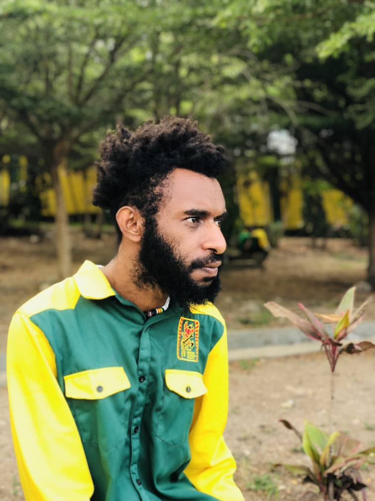
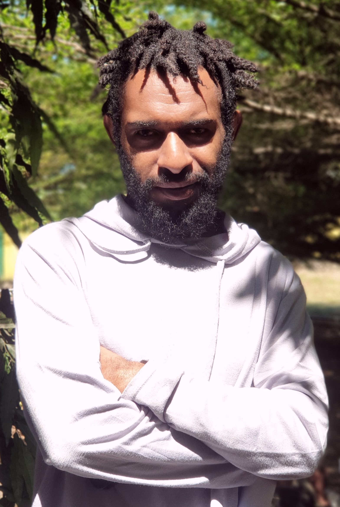

Graphic Design
Creating visual identities, branding, posters, promotional materials and digital graphics.
VISUAL COMMUNICATIONHello, my name is
I am a creative multimedia designer passionate about transforming ideas into meaningful visual experiences through graphic design, photography, digital media, animation and web design.

My background, identity, ambitions and creative journey.

My name is Jimox Yamaski, a Multimedia Designer from Mitihanap Ward, Oksapmin LLG, Telefomin District, West Sepik Province, Papua New Guinea. I am currently based in Port Moresby.
My creative journey is built on a strong interest in visual communication, technology and the power of design. I believe design is more than making something look attractive. It is about communicating ideas, solving problems, creating meaning and connecting people through visual experiences.
I have developed an interest in different areas of design, including graphic design, fashion, architecture, typography, photography, digital media and the history and meaning behind creative work. I enjoy exploring how different forms of design influence culture, identity and everyday life.
Through my education and practical work experience, I have continued developing my creative, technical and communication skills. I am passionate about learning new technologies, exploring innovative ideas and improving my abilities as a multimedia professional.
My long-term ambition is to contribute to the creative and digital industry in Papua New Guinea and beyond by producing meaningful work, developing innovative solutions and building opportunities through multimedia and technology.
To establish myself as a capable multimedia professional by applying my knowledge, creativity and technical skills in a professional environment. I aim to contribute to organisational goals, continuously improve my capabilities and use multimedia technology to communicate ideas and create valuable solutions.
Creative abilities and technical areas I continue to develop.
Creating visual identities, branding, posters, promotional materials and digital graphics.
VISUAL COMMUNICATIONCapturing moments, subjects and environments through creative photography and composition.
VISUAL STORYTELLINGEditing footage, arranging sequences, adding transitions, sound and visual effects.
VIDEO PRODUCTIONDeveloping motion graphics, animated visuals and creative multimedia presentations.
MOTION DESIGNDesigning responsive digital interfaces and building websites using modern web technologies.
DIGITAL EXPERIENCESCreating layouts for documents, brochures, magazines and printed materials.
LAYOUT & TYPOGRAPHYEnhancing photographs through retouching, colour correction and digital manipulation.
IMAGE PROCESSINGExploring design history, visual concepts, creative meaning and emerging innovations.
IDEAS & INNOVATIONDigital tools and applications I have studied or worked with.
The educational foundation behind my professional development.
Port Moresby Technical College
Developed knowledge in multimedia design, digital production and creative communication.Port Moresby Technical College
Continued technical and practical training in multimedia.Port Moresby Technical College
Established foundational technical and creative skills.Oksapmin Secondary School
Oksapmin Secondary School
Mitihanap Primary School
Practical experience and professional exposure in the creative industry.
Worked as a Graphic Designer for nine months in 2025. This experience provided an opportunity to apply creative design knowledge in a professional environment, work on visual communication tasks and further develop practical design capabilities.
Completed eight weeks of On-the-Job Training in 2024. The placement provided practical exposure to a professional media and publishing environment and helped strengthen my understanding of multimedia production and workplace responsibilities.
Creative subjects that inspire the way I think and work.
Visual identity, composition and communication.
Style, cultural identity and creative expression.
Structure, form, space and modern design.
Letters, typefaces and visual language.
Capturing stories, moments and perspectives.
Understanding the meaning and evolution of design.
Have an opportunity, project or creative idea? Let's connect.
P.O. Box 1, Tabubil 332,
Western Province, Papua New Guinea.
Port Moresby, Papua New Guinea